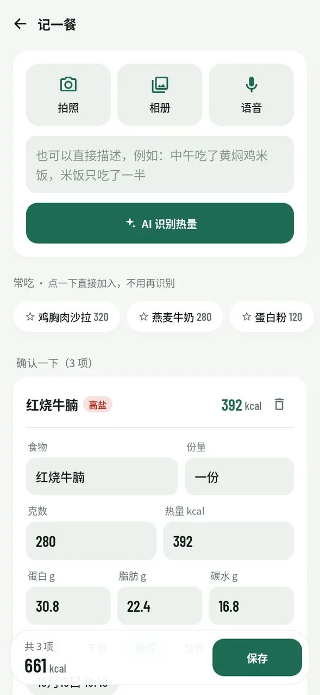
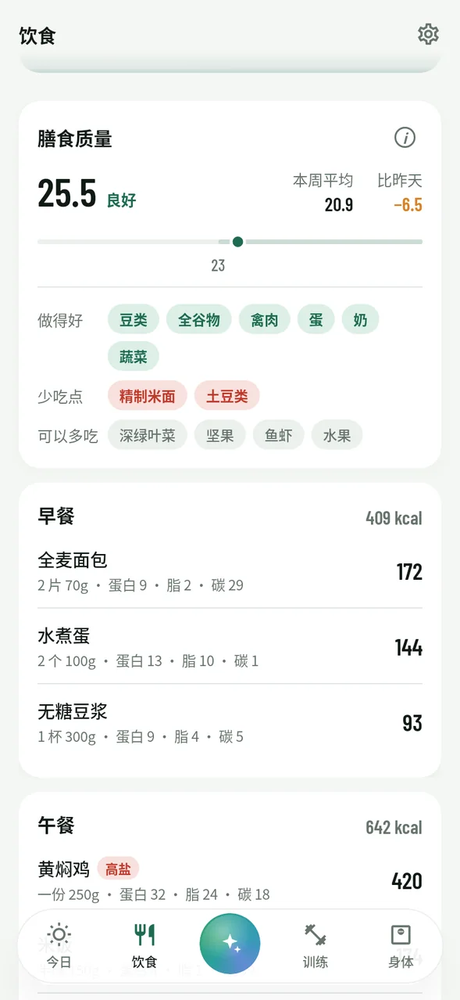
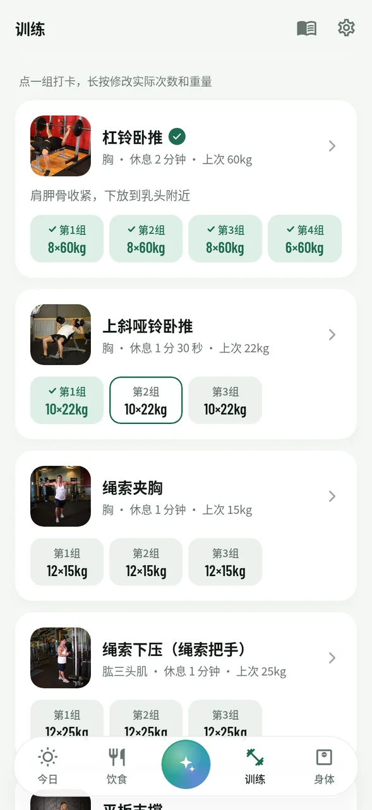
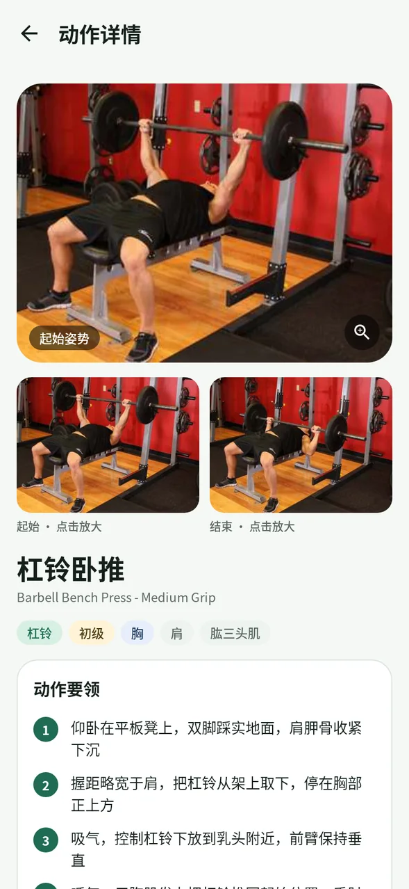
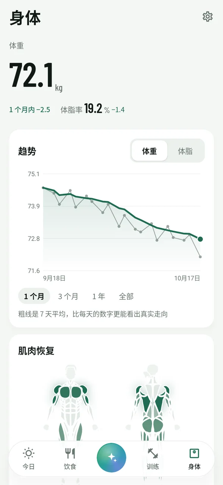
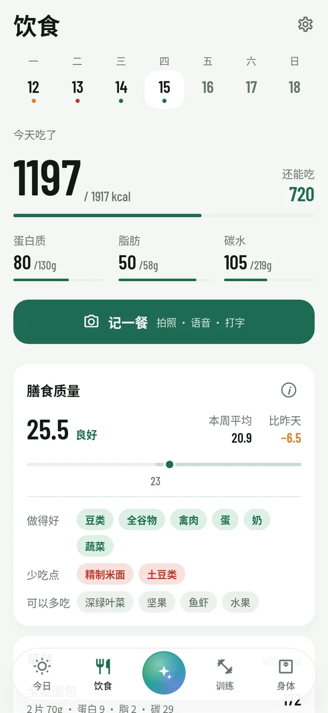
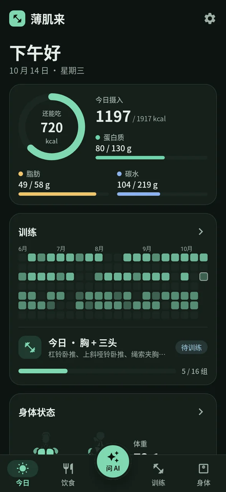
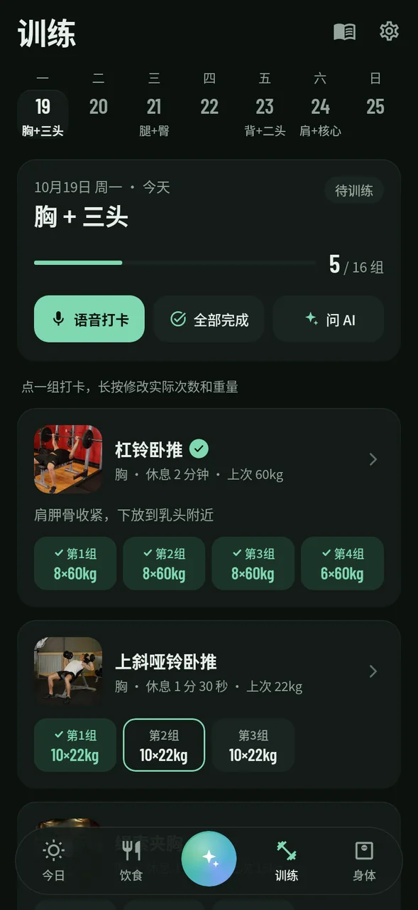

饮食、训练、身体数据放在一起，再交给一个什么都能帮你做的 AI。
记饮食、记体重、训练打卡、换动作、改计划、查数据，对 AI 说一句就行。改数据前会先问你，改错了随时撤销。
拍照、语音或打字都行。家常菜、外卖、"吃了半碗"这种模糊说法都能估，按菜拆成多条，每条都能自己改。
不只算热量，还按蔬菜水果、全谷物、豆类、红肉加工肉、含糖饮料这些食物组给每天打分，高盐的菜单独标出来。
告诉 AI 目标、每周几练、有什么器材，计划精确到每组几次，按日历排好。漏练了自动重排进后面几天，不满意一键撤销。
肌肉恢复图告诉你哪里还没恢复。体重、体脂趋势看 7 天移动平均，可以从手机的健康数据自动同步。
记录只存在你的手机上，没有账号、没有服务器。AI 用你自己的 Key，免费额度就够用。每天自动备份。
底部正中间那颗会转的光球就是 AI，随叫随到。它能读写 App 里的所有数据，像私人教练加营养师一样回答问题；回答上写着你配置的模型名，用的是哪个 AI 一目了然。
一个「记一餐」入口：拍照、相册、语音、打字都在里面，语音在手机上离线识别。按中国常见的碗、盘、外卖份量来估，还会把炒菜用油算进去。

采用国际通用的全球膳食质量评分（GDQS），把一天吃的东西按 25 类食物打分，满分 49。刻度上淡绿色那段就是「良好」，目标是让点落进去。

顶部是一周的日期条，往下一拉就展开成整月日历，像拉开「二楼」一样先有一点阻力。完成、待练、漏练用颜色分清；点一组打卡，长按改实际次数和重量。

159 个常用动作，健身房、哑铃、徒手都有。起始和结束姿势的示意图自动交替播放，点开能全屏放大看细节。

肌肉图按恢复情况着色：刚练完最深，随恢复慢慢变浅。恢复时间按部位大小、训练组数、是否练到力竭来算，还会参考年龄和前一天的饮食。

跟随系统自动切换深色模式。深色不是简单反色，每个颜色都单独调过。



不用注册账号，不用付费。
在 Releases 下载最新的 APK 安装。以后有新版本，App 里点一下就能更新。
设置 → AI 服务配置 → 开始配置。选一家服务（推荐智谱，对话和看图的模型都免费），跟着引导注册、复制 Key，回到 App 会自动填好、自动选好模型并测试连接。也支持任何 OpenAI 兼容接口。
填好身高体重和目标，让 AI 生成训练计划，然后每天记饮食、打卡就行，剩下的交给它。
App 免费、开源。AI 功能需要你自己的 API Key，智谱、Gemini 等服务都有免费额度，个人日常使用基本够用。
所有记录只保存在你的手机上，没有账号和服务器。只有你使用 AI 功能时，相关内容（比如你说的话、食物照片）才会发给你自己配置的 AI 服务。API Key 不会进入系统云备份。
照片估算一般有 20%～30% 的误差，所以每一条都能修改。对份量有把握时改一下克数，热量和营养素会自动按比例换算。常吃的食物校准一次后收藏起来，以后就准了。
采用国际通用的全球膳食质量评分（GDQS）：把食物分成 25 类，吃够健康的组（深绿叶菜、豆类、全谷物等）加分，不健康的组（加工肉、含糖饮料、油炸食品等）吃多了扣分。食物组由 AI 在记录时顺便拆分好，你不用手动填。分数只是参考，不是医学诊断。
每天检查前一天有没有打卡。漏掉的训练会由 AI 结合你的完成情况和体重变化，合理排进接下来两周，不会把两次大训练挤在相邻两天。已经完成的训练不会被改动。每次调整都记在「调整记录」里，可以一键撤销，也可以直接让 AI 改回去。
可以。薄肌来从安卓系统的 Health Connect（健康连接）读取体重和体脂，小米运动健康、三星健康、体脂秤自带的 App 等，只要在它们的设置里打开 Health Connect 数据共享就行。第一次打开薄肌来不会要任何权限，想同步时在 设置 → 健康数据同步 里点「开启同步」，不想用了随时可以停止。
暂时只有安卓版。iPhone 版需要另外开发和签名，在计划中。